Items
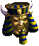 |
Abbey Normal Golem Head | Bring all six Golem parts to Thomas Grey in the Bracada Desert to become Wizards and Honorary Wizards | In a chest at the north end of the main square in Bracada Desert |
| Altar Piece (Dark) | Bring both Altar Pieces to Resurecta in Celeste | In a hidden chest under the altar in the Temple of the Dark | |
| Altar Piece (Light) | Bring both Altar Pieces to Resurecta in Celeste | In a chest in the northeast corner of the Temple of the Light | |
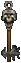 |
Barrow Key | Use in Barrow VII, Barrow IX, and Barrow X to reveal navigation guides for the Barrows | In chests in Barrow VII, Barrow IX, and Barrow X |
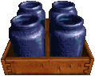 |
Case of Soul Jars | Bring to Sir Caneghem in the northeast corner of Celeste | In a chest on the west side of Casltle Gloaming |
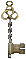 |
Central Pillar Key | Use on the center pillar in the Walls of Mist to open the path to the exit | In a chest in the Walls of Mist through the central arch |
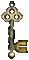 |
Colony Zod Key | Open the door to Xenofex' chamber in Colony Zod | From Roland Ironfist after you release him from his cell in Colony Zod |
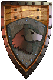 |
Contestant's Shield | Show to Lord Markham on Emerald Isle for a 1000 gold reward | On the floor in the dragon's cave north of the town on Emerald Isle |
| Control Cube | Bring to Robert the Wise in the northeast corner of Celeste | Defeat Tolberti in his home on the west side of The Pit | |
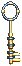 |
East Pillar Key | Use on the east pillar in the Walls of Mist to open the path to the exit | In a chest in the Walls of Mist through the east arch |
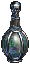 |
Elixer | Cure the dwarves in the Red Dwarf Mines who have been turned to stone | Speak to the King of the Dwarves in Stone City in the Barrow Downs |
| Faerie Key | Opens a passage to hidden treasure in the Hall Under the Hill | From a Queen Dragonfly in the Hall Under the Hill | |
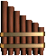 |
Faerie Pipes | Give to Johann Kerrid in Pierpont in the Tularean Forest for a reward | Give the Letter to the Faerie King to the Faerie King in Hall Under the Hill |
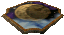 |
Floor Tile | One of the items required by Lord Markham as part of the scavanger hunt | On the floor in the Library in the Temple of the Moon |
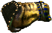 |
Golem Chest | Bring all six Golem parts to Thomas Grey in the Bracada Desert to become Wizards and Honorary Wizards | In a chest near the southwest corner of the Barrow Downs |
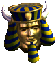 |
Golem Head | Bring all six Golem parts to Thomas Grey in the Bracada Desert to become Wizards and Honorary Wizards | In a chest near the stables in Bracada Desert |
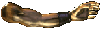 |
Golem Left Arm | Bring all six Golem parts to Thomas Grey in the Bracada Desert to become Wizards and Honorary Wizards | In a chest on an island on the west side of Avlee |
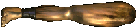 |
Golem Left Leg | Bring all six Golem parts to Thomas Grey in the Bracada Desert to become Wizards and Honorary Wizards | In a chest near the northeast corner of the Deyja Moors |
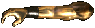 |
Golem Right Arm | Bring all six Golem parts to Thomas Grey in the Bracada Desert to become Wizards and Honorary Wizards | In a chest on the southeast corner on the island in Tatalia |
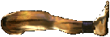 |
Golem Right Leg | Bring all six Golem parts to Thomas Grey in the Bracada Desert to become Wizards and Honorary Wizards | In a chest near the northwest corner of the Deyja Moors |
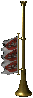 |
Gryphonheart's Trumpet | Give to either Queen Catherine or the Elven King for a reward | In a chest on the battlefield outside of the Tularean Caves in the Tularean Forest |
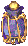 |
Haldar's Remains | Bring to Mazim Dusk on the southern end of Mount Nighon for a reward | In the northeast corner of The Maze on Mount Nighon |
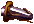 |
Heart of the Wood | Return to the Oldest Tree in the Tularean Forest | In a hidden room in the northeast corner of the Mercenary Guild |
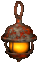 |
Lantern of Light | Return it to Tarin Withern in the temple in Harmondale | In a chest off of a hidden passage in Barrow II in the Barrow Downs |
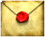 |
Letter to Faerie King | Give to the Faerie King in Hall Under the Hill and he will give you the Faerie Pipes | From Johann Kerrid from Pierpont in the Tularean Forest |
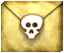 |
Letter to Lord Markham | Give to Lord Markham in Tatalia and he will give you Parson's Quill | From Norber Thrush in Erathia |
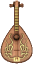 |
Lute | One of the items required by Lord Markham as part of the scavanger hunt | Give 500 gold to Ailyssa the Bard in the town on Emerald Isle |
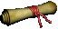 |
Map to Evenmorn Island | Show to Falk in the Deyja Moors to be promoted to priest | In a hidden room in the Tidewater Caverns in Tatalia |
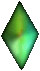 |
Oscillation Overthruster | Bring to Resurecta in Celeste to open the gates to the ancients | In the bridge of the Lincoln |
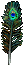 |
Parson's Quill | Bring to Norbert Thrush in Erathia for a reward | Give the Sealed Letter to Lord Markham in Tatalia |
| Riverstride Plans | Give to the Elven King in the Tularean Forest to help him prepare for an attack on Erathia | In a vault in Fort Riverstride in Erathia | |
| Seashell | One of the items required by Lord Markham as part of the scavanger hunt | Buy from Sally by Dragon's Cave for 100 gold or find one in a crate in the swamp on the northwest corner of Emerald Isle | |
| Season's Stole | Return to Gary Zimm in his tower on the north end of the Bracada Desert | In a chest at the north end of the Hall of the Pit | |
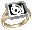 |
Signet Ring | Return to Davrik in Harmondale for a reward | In a chest in the Bandit Caves in Erathia |
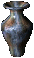 |
Vase | Bring to William Lasker in the Erathian Sewers to be promoted to Rogues | On the mantle in Lord Marham's estate in Tatalia |
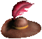 |
Wealthy Hat | One of the items required by Lord Markham as part of the scavanger hunt | In a chest in the Temple of the Moon |
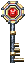 |
West Pillar Key | Use on the west pillar in the Walls of Mist to open the path to the exit | In a chest in the Walls of Mist through the west arch |
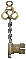 |
William's Tower Key | Unlocks Alice Hargreaves cell in William Setag's Tower | William Setag in William Setag's Tower |
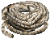 |
Worn Belt | Use on the lift engine to sabatoge the lift in the Red Dwarf Mines | From Steagal Snick in the village in the northeast corner of Avlee |
| Zokarr IV's Skull | Bring to his coffin in Zokarr's Tomb | In the northeast corner of the Nighon Tunnels |